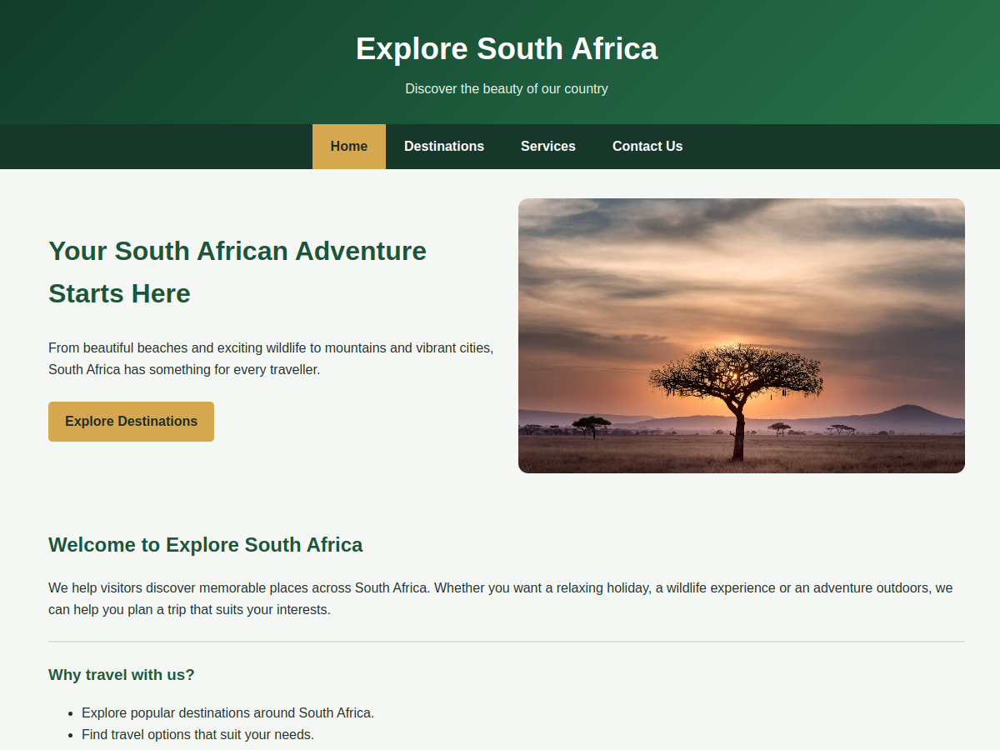
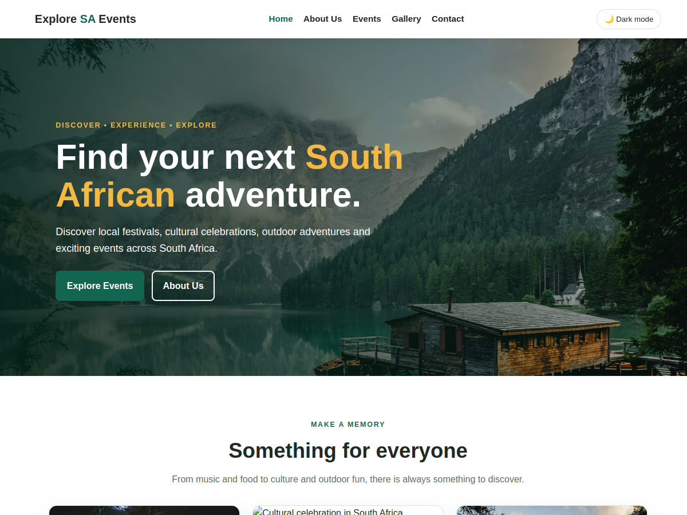
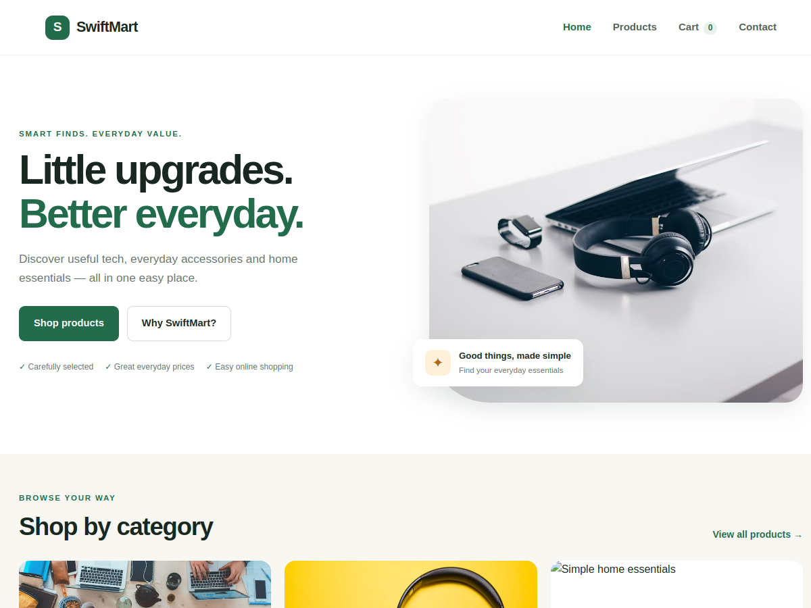

02 / SELECTED WORK
Things I’ve been building.
Web projects for discovering South African destinations and events, and making everyday shopping easy.

01 / TRAVEL WEBSITE
Explore South Africa
A travel website introducing visitors to South African destinations, wildlife adventures, beautiful landscapes, and coastal getaways.
visit_project() ↗
02 / EVENTS WEBSITE
Explore SA Events
A South African events discovery website for finding local festivals, cultural celebrations, and outdoor adventures.
visit_project() ↗
03 / ONLINE SHOP
SwiftMart
An online shop for everyday tech, accessories, and home essentials, with product browsing and a shopping cart.
visit_project() ↗